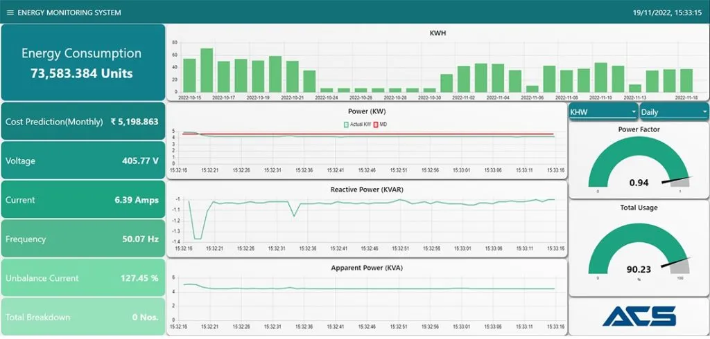
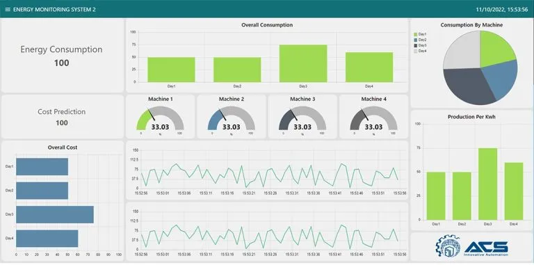
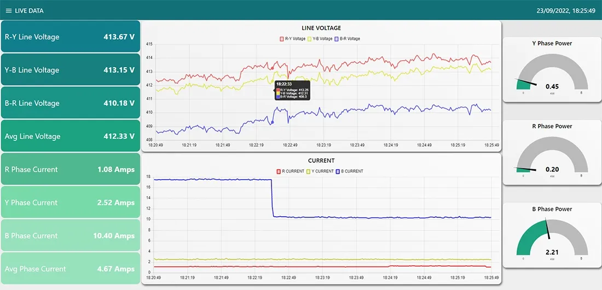
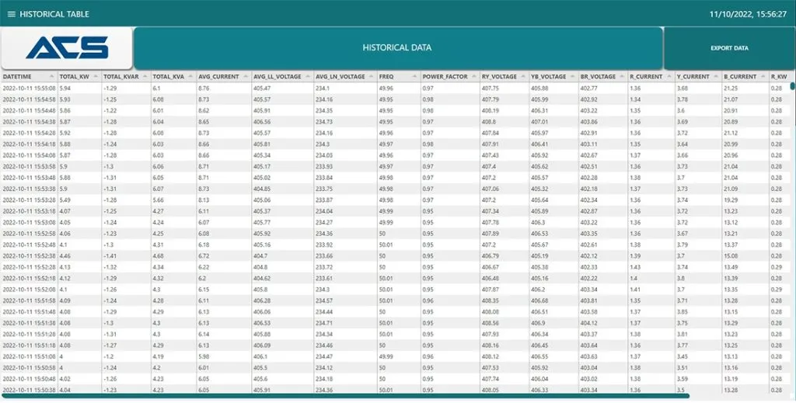
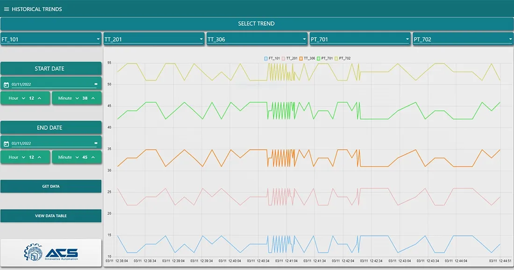
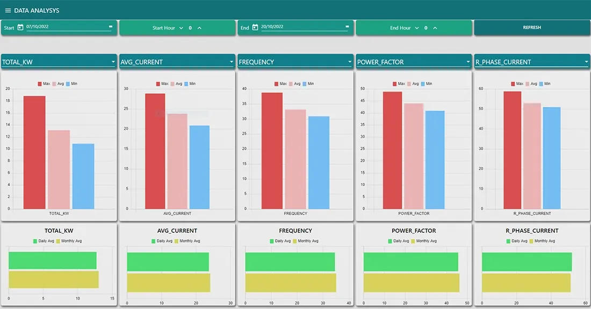
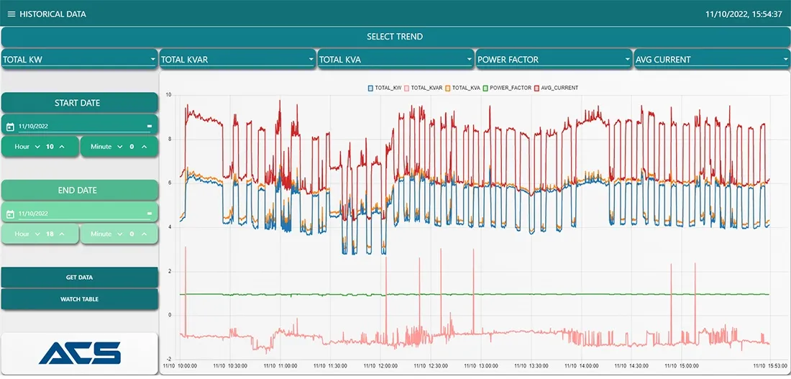

EMS Overview

Software & Cutting Edge Technologies





More Screens


Talk to ACS Engitech about PLC panels, SCADA systems, process automation, machine automation, data logging, or Siemens automation support.